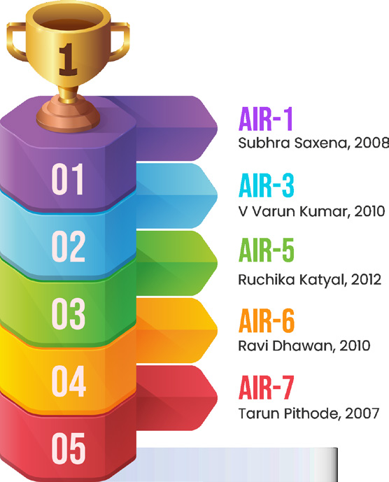

A comprehensive, personally guided mentorship under Sunil Gupta Sir (IAS Mentor & Author) designed to transform your UPSC preparation with structured stages, adaptive scheduling, and one-on-one mentoring.

Director, Founder & Chief Mentor of Inspiration IAS Academy

IAS Mentor & Author | Faculty of GS (Polity & Governance), Ethics & Public Administration
Alumni of IT-BHU (Banaras Hindu University) & Kurukshetra University with over 20 years of teaching experience in UPSC preparation.
A systematically designed, chronological programme that takes you through every phase of your UPSC journey.
A deep-dive assessment session to understand exactly where you stand.
Designing your personalised mission roadmap with clarity and direction.
Breaking down the flow-chart into weekly actionable assignments.
Comprehensive resources to fuel your preparation at every step.
Continuous assessment and professional support for course correction.
Direct personal interaction with your mentor for academic and stress-related guidance.
Interactive lectures organised by the Chief Mentor on answer writing, competitive aspects, and stress management techniques.
Unique rescheduling support in case of urgency such as illness, ceremonies, or university assignments. Our team redesigns your schedule in consultation.
Meticulously designed objective tests to improve accuracy, develop risk management for negative marking, and build time & stress management.
Structured subjective test series training effective introductions, question demand analysis, blueprint presentation, and conclusion writing.
One-to-one personal interaction to share academic as well as stress-related doubts directly with your assigned mentor.
A custom flow-chart designed specifically for your preparation level, weak areas, and examination timeline.
This programme is strongly recommended for aspirants who have completed their foundation course or are in the process of preparation and want systematic, guided improvement.
Struggling to start or restart the preparation / revision
Getting confused to decide stages and sequence of preparation
Feeling inadequacy of content — both traditional and contemporary
Finding it difficult to get back on pace after interruptions
Making silly mistakes repeatedly in practice sets
Struggling to write answers within the stipulated word limit
Encountering fear of failure during preparation
Frequently deviating from the schedule and wasting time
Choose a mentorship duration that fits your preparation timeline. All prices include GST.
AIR 1 (Subhra Saxena, 2008), AIR 3 (V Varun Kumar, 2010), AIR 5 (Ruchika Katyal, 2012), AIR 6 (Ravi Dhawan, 2010), AIR 7 (Tarun Pithode, 2007) and many more...

Reach out to us today to register for the IAS Mentorship Programme.
Visit us: 104, First Floor, Old Rajendra Nagar Market, Delhi - 110060